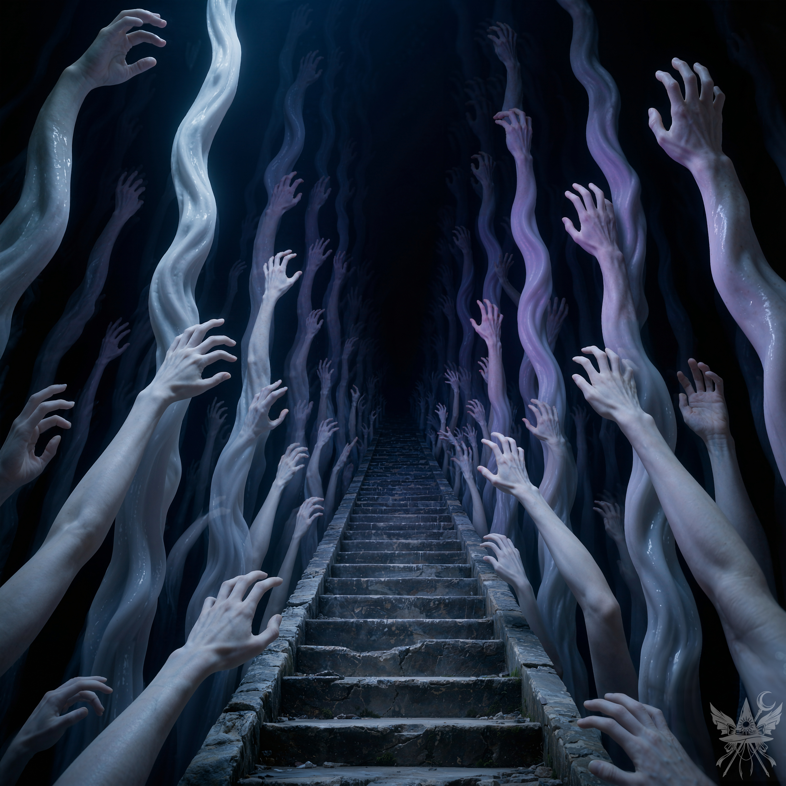
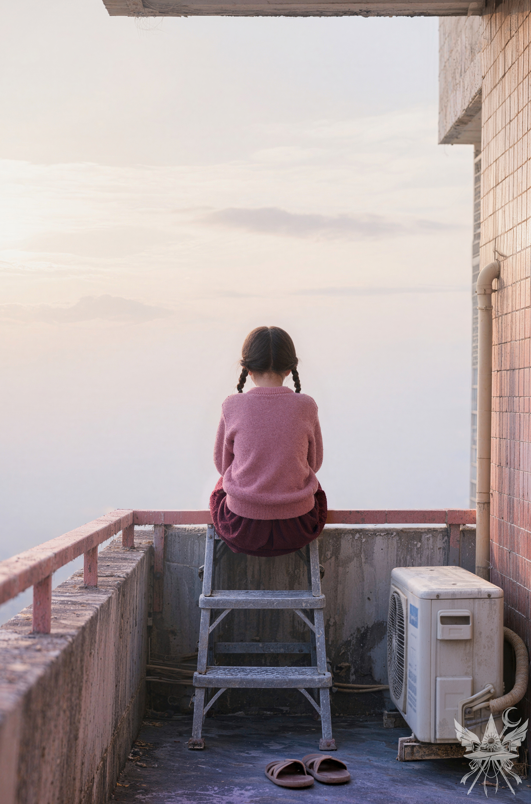

第87章 最後の記録
「もう一度、水をかけてみましょうか」
「……駄目みたいね。ねえルイズ、何か使えるお薬はないの？」
「あら、お薬？ もちろん、お代は高くつくわよ」
「……つまらない冗談はやめてちょうだい」
「ふふ、わかったわかった。どのみちお薬なんかじゃどうにもならないわ。それにしても、人間の肉体って本当に面倒ね。魂はどこかへ行っているのに、ただの抜け殻のお世話までさせられるなんて」
「じゃあ、どうするつもり？」
「仕方ないわね。メデアが目を覚ますまで、気長に待つしかないわ」
＊＊＊

果てしない石の階段。手すりはない。一歩、また一歩、上る。終わりは見えない。どこから来たのか、どこへ行くのかわからない。
壁面には無数の腕。血の気を失った蒼白の肌。絡み合い、ぬらぬらと粘液質の光沢を放っている。
地下室のようなカビ臭さ。生温かい湿気。重く粘着質な静寂。
中央のひび割れた階段だけが、奥の完全な闇へ伸びている。
灼熱の闇。焼けるような熱気と凍えるような冷気が、交互に肌を刺す。
振り返る。白い手がゴムのように伸びる。身を捩りながら追ってくる。
歩き続ける。手は同じ高さ。50歩、100歩。変わらない。
（永遠に続く階段…。これ以上上り続けるより、死んだ方がましだわ。降りてみよう）
一歩下がる。足がもつれ、闇に落ちる。心臓が激しく鼓動する。落ちる。落ちる。階段が遠ざかり、闇が迫る。落ちる。また落ちる。
＊＊＊
柔らかなベッドの上で目覚める。見慣れないベッドに手を伸ばす。ありふれたシーツの感触。毛布が顔からつま先まで覆っている。それを払いのける。あたりを見回す。
部屋はない。ただ、無限の闇。闇の中に、無数の白いろうそくが揺らめく。遠くの炎は、星屑のようにかすかに光る。ベッドから降りる。足の裏に、黒く光る鏡面のような床の冷たさが伝わる。まるでガラスの上を歩いているようだ。裸足のまま、ベッドの周りを歩く。深紅のロングドレスを着ている。金色の刺繍が施され、首には大きな宝石のネックレスが輝く。髪は金色のネットでまとめられている。
（このドレス……テオドラの……？）
ドレスを見ていると、背後からコツ、コツと音が響く。何かが滑らかな床を歩く音。
振り返る。闇の中で、二つの紫色の光が燃える。猛禽類の瞳。ろうそくの光が、その姿を浮かび上がらせる。髪は赤紫色のポニーテール、ボーダー柄のセーターを着ている。顔には、大きく湾曲した黄色いくちばし。目は充血し、狂気を帯び、焦点が定まっていない。
（武器がないわ……）
後ずさりする。鳥人間は速い。一瞬で間合いを詰めてくる。鉤爪のような指が肩に触れる。燃えるような瞳が顔に迫る。鋭いくちばしが開き、喉元を狙う。

鋭い音。鳥人間が宙を舞う。ベッドのヘッドボードに頭が激突する。閃光を放つ長い包丁が振り下ろされる。血は流れない。切断された生首が滑らかな床を転がり、足元へ。大きく見開かれた瞳孔。顎が小さく痙攣する。まだ生きている。
小さな女の子が前に立つ。暗褐色の三つ編み。ピンク色のセーター、胸のあたりに市松模様。窓付き。地獄で明羅を襲った少女だ。窓付きは包丁をだらりと下げて握り、じっと見つめてくる。表情が読み取れない。事後の重い静寂だけが、儀式的な薄明かりの中にのしかかっている。
（何を考えているのか、相変わらずさっぱりわからないわね）
「久しぶり。助かったわ」
冷静さを保とうとする。
「行くよ。」
窓付きはそれだけ言うと、歩き出す。
ついていく。沈黙。歩く。景色は変わらない。闇の中、無数のろうそくが揺らめいている。どれも同じに見える。
「どこへ行くの？」
尋ねる。
「小人、捕まえる。」
小さなピラミッドが現れる。腰ほどの高さ。下部に小さな入り口。白とラベンダー色のストライプ。乾いていない塗料に触れると、指に色がつく。
「小人はそこから出てくる？」
覗き込む。窓付きは何も言わない。ただ待っている。
「チクチク…」。服に影が走る。ろうそくのそばを、小さな生き物が走り抜ける。窓付きは素早く動く。小人を翻弄する。手を出して手伝う。緑の帽子をかぶった小人が、右往左往している。
窓付きは小人の顎ひげを掴む。小さな手が空を切る。窓付きは反対の手で小人の背中を撫でる。小人が、白い卵に変わる。自転車と同じだ。
窓付きは卵に触れる。体が小さくなる。
（まるで不思議の国のアリスみたいだわ）
小人より小さくなった窓付きが、卵を差し出す。触れる。ピラミッドが大きくなる。
「行こう。」
＊＊＊

扉を開ける。濃い紫色のガス状の雲が渦巻く。全く別の世界。
白と赤茶色のタイル。市松模様の道が、暗い虚空に浮かんでいる。
窓付きが道を歩く。道の脇には、根のない松の木。宙に浮いて並んでいる。道はジグザグに曲がりくねっている。
行く手に、鳥人間が立ちはだかる。身構える。
窓付きはポケットから光る卵を取り出す。手を伸ばそうとした瞬間、窓付きはそれを制止する。卵を自分の頭に乗せる。
頭が、巨大な四角い歩行者用信号機に変わる。金属製の筐体。赤錆で覆われ、風化している。
鳥人間が鉤爪のような指を伸ばす。突進してくる。
信号の上部が激しく発光する。毒々しい赤色。鳥人間は静止する。まるで時が止まったかのようだ。
頭は信号機のまま。小さく手を振る。横を通り過ぎるよう合図する。
（一体どこへ行くつもりなのかしら……。でも、信号機に、どうやって話しかければいいの）
空に浮かんでいた道が消える。窓付きは道の端に立つ赤いトーテムポールに触れると、景色が変わる。同時に、窓付きの頭も元に戻る。歩き続ける。炎の海に浮かぶ溶岩の道。鳥人間の潜む薄暗い部屋。幽霊が彷徨う森。次々と、全く異なる世界を通り抜けていく。
「窓付き、どこへ行くの？」
森の中に、扉がぽつんと立っている。家も壁もなく、扉だけが存在する。後をついて扉をくぐる。そこは、無数の扉が並ぶ、不思議な空間。窓付きは、その中の一つの扉へ導く。
「着いた」
窓付きは小さく呟く。
見慣れた小さな部屋。ベッド、ランプの灯った机、古びたテレビとゲーム機、埃っぽい本棚。バルコニーへ続く扉。どこにでもあるような、普通の部屋。
窓付きは回転椅子に座り、机の引き出しから日記を取り出す。
「ここが、窓付きの家なの？」
窓付きは目を合わせ、すぐに視線をそらす。
「ううん…私の家は…違う。もうすぐ…全部、揃うの…」
「全部って……？」
聞き返す。
「小人…包丁…三角巾…信号……。行こう」
窓付きが日記を持って、バルコニーに出る。
虹色に輝き、異様な光を放つ空。雲が猛スピードで流れ去る。家も景色も何も見えない。窓付きは日記を覗き込む。
「全部で24個。あと1つ…。テオドラさん…私の自転車…。お願い、返して…」
ずっと持ち歩いていた卵が自分の手の中にあることに気づく。
＊＊＊
（やっと…終わった…）
窓付きは毛布を蹴飛ばし、見慣れた部屋を見回した。テレビは点いているけれど、5年間ずっと砂嵐のまま。ザーザーというノイズだけが部屋に響いている。アンテナを直すには…外に出なきゃいけないから。
空になったピザの箱。窓付きはそれを広げ、指先で段ボールをなぞった。何も残っていない。
机の上のランプも点きっぱなしだった。窓付きは椅子に座り、日記を開いて最後のページを読み返した。
「今日もポニ子ちゃんの世界に行ってきた。あの可愛いお家は変わってなかった。淡いピンクの壁…。いつかあんな家に住みたい。ポニ子ちゃんは相変わらず私のことを見てくれないけど、元気そうでよかった。本を読んだり、人形遊びしたり、家の周りのクリーム色の小道を歩いたり…。でも、問題は私。私はあの世界に溶け込めない。今日、新しいエフェクトを見つけた。私の髪がポニ子ちゃんみたいに明るくなる魔法…。まだ使い方がわからないけど…。あと必要なのは、小人と、自転車だけ。明日は小人を捕まえに行こう。」
ざっと読み終えると、窓付きはペンを取り、日付を書き込み、最後の言葉を綴り始めた。
「ついに全部揃った。今日は本当にラッキー。先週夢で会ったビザンツの皇后、テオドラさんが会いに来てくれた。自転車を返しに来てくれたって、すぐにわかった。不思議な感覚…。何年も誰ともまともに話せなかったのに、テオドラさんは初めて私と話そうとしてくれた…。心配してくれたのかな…。聞いてみたかったけど……私、うまく話せないね。
もう大丈夫。一緒に小人を捕まえて、自分の世界に帰ってきた。これで、全部終わった。24個の卵を扉の前に並べた。パラカスの予言通り、私とあの世界との繋がりは強くなった。
さよなら、日記。6年間、あなたは私のたった一人の友達だった。ありがとう。今度は本当の友達を作ろう。」
最後に凝った顔文字を描き加え、日記を閉じた。しばらく目を離すことができない。もう一度開き、ページをめくり、またそっと閉じた。テレビとランプを消し、ベッドを整えた。
（現実の世界には私の居場所なんてない…。誰も私の失踪に気づいてくれない…。）

ベランダに出る。ベージュに近い淡いピンク色の壁面、白い配管。生活感のある薄汚れたエアコンの室外機の横に、銀色の脚立が置かれている。錆びたピンク色の金属製手すりの向こうには、厚い雲層と無限に広がるパステル調の空だけが広がっている。肌寒い湿った空気と、高い場所特有の風の音。
窓付きは背が低いので、バルコニーの手すりを越えるために小さな踏み台を使った。コンクリートの床に、茶色のスリッパが一足、非常に丁寧に揃えて置かれている。粗い編み目のニットセーターを着た背中が、朝焼けとも夕暮れともつかない淡い光に包まれる。二段のステップをゆっくりと上った。
（本当の家に帰るんだ…。さよなら、この世界…）
[SYSTEM ALERT: 音響兵器デプロイ完了]
▼ 本章の絶望を1000%味わうための専用聴覚データ ▼
■ YouTube：『24の扉』